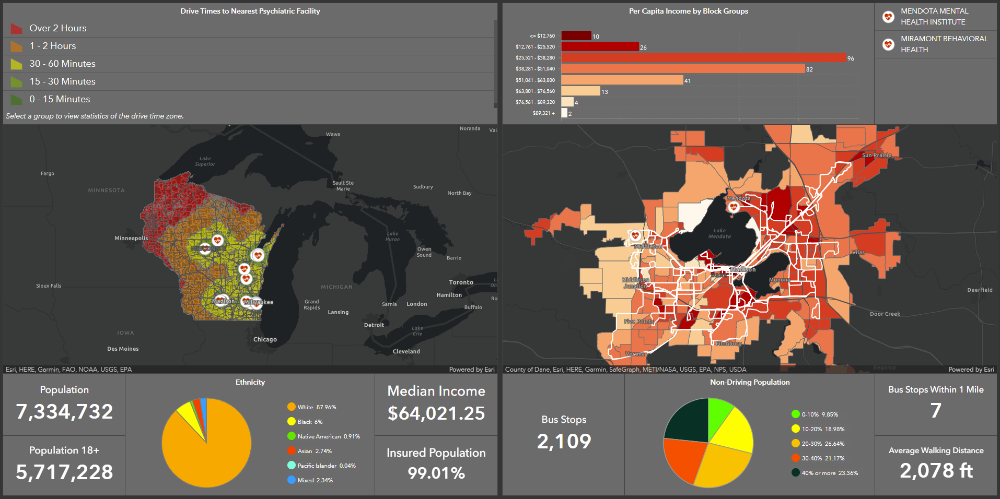

This dashboard is published publicly in ArcGIS Online as Psychiatric Facilities Analysis. The purpose of this dashboard was to create an interactive display illustrating some of the socioeconomic boundaries that occur when seeking mental health care. Our studies indicated that throughout the state of Wisconsin, approximately 1.4 million people in the state are required to drive at least an hour to the nearest psychiatric facility and those further from facilities are more likely to be uninsured and have a lower median household income. These studies were conducted assuming access to mental health car was limited to in-state facilities.